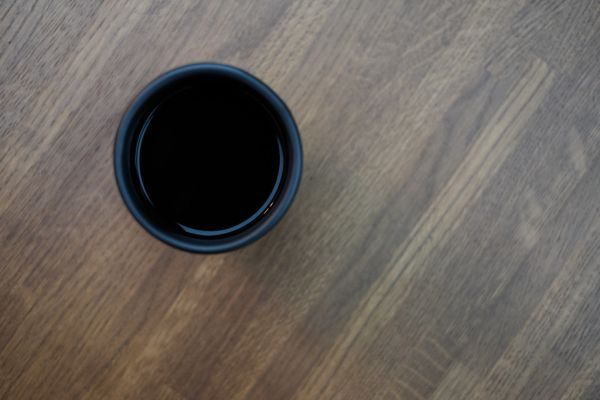

和歌珈琲


制作側の連想
上ボールと下フラスコ
このページは「サイフォン」の形から着想した作りです。サイフォンは、下のフラスコで温めた湯が上のボールへ上がり、火から離すとまた下へ戻る道具です。そこで、このサイトでは「確認できていること」を下のフラスコ、「まだ分からないこと」を上のボールに置きました。これは制作側の連想で、お店の理念・由来とは無関係です。お店がサイフォンを使っているかどうかも分かりません。
上のボール
まだ分からないこと
- 営業時間 準備中
- 定休日 準備中
- メニュー・価格 準備中
- ご予約・駐車場 準備中



下のフラスコ
確認できていること
| 所在地 | 〒985-0871 宮城県多賀城市留ケ谷２丁目６−３８ |
|---|---|
| 電話 | 090-7067-1221 |
| SNS | Instagram @waka_coffee |
| 営業時間 | 準備中 |
| 定休日 | 準備中 |
| ご予約 | 準備中 |
| 駐車場 | 準備中 |